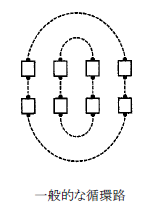
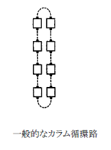
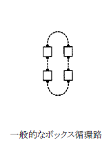

Circulate Family
一般的に、すべてのCirculate(サーキュレイト)はそれぞれのダンサーをして定められた軌道（“循環路”と呼ぶ）を次のダンサー位置まで前進させるものである。 下に定義を述べるが次の図を参照されたい。
指示された人(アクティブ)は循環路に沿って次の位置に前進する。各種隊形の循環路は点線で図に示した。
- （指示された人） CIRCULATE: Boys、Girls、Centers、Endsがサーキュレイト。
- ALL 8 CIRCULATE (オール エイト サーキュレイト)： カラムにいるダンサーはカラムの循環路に従う。 ウエイブまたはラインにいるダンサーはウエイブまたはラインの循環路に従う。
- COUPLES CIRCULATE (カプルズ サーキュレイト): それぞれのカプルが一組となり、カプルの循環路に沿って次の位置に前進する。
- SINGLE FILE CIRCULATE (シングル ファイル サーキュレイト)： ダンサーはカラムの循環路に沿って次の位置に前進する。
- SPLIT CIRCULATE (スプリット サーキュレイト)： 隊形は二つのボックスに分けられており、ダンサーは自分がいるボックスの循環路に沿って次の位置に前進する。
- BOX CIRCULATE (ボックス サーキュレイト)： 各ダンサーはボックスの循環路に沿って次の位置に前進する。
  
Circulate Family (サーキュレイト ファミリー)ではオーシャンウエイブの規則や向かい合ったカプルの規則（第１部総記、約束事と規則を参照）は適用されない。
Circulate Family (サーキュレイト ファミリー)では動作を分割して使うことは適切であり、時々使われる。 第４部付加細目分数を参照。
Circulate(サーキュレイト)のタイミングはすべて４拍であるが、Pass Thru（パス スルー）効果を持つCirculate (サーキュレイト)は２拍となる。
Circulate(サーキュレイト)にはいろいろなタイプのものがあり、いろいろな名前が付けられているが、次に詳しく述べる。
(Named Dancers) Circulate(名指しをされたダンサーのサーキュレイト)
Centers (or Ends) Circulate
Girls (or Boys) Circulate
Everyone Circulate
Circulate
Couples Circulate（カプルズ サーキュレイト）
Couples Circulate
各カプルは一組となり一般的なボックス循環路（上図参照）に沿って次の位置に前進する。
例：

All 8 Circulate（オール エイト サーキュレイト）
All 8 Circulate
All 8 Circulate（オール エイト サーキュレイト）を常に“外は外、中は中に”と教えるのは不適切である。 これはオーシャン ウエイブと、トゥー フェイスト ラインからは正しいが、カラムからは正しくない。
トゥー フェイスト ラインからはAll 8 Circulate（オール エイト サーキュレイト）をコールするよりはCouples Circulate（カプルズ サーキュレイト）（＃21.b）のほうがより一般的である。カラムからのSingle File Circulate（シングル ファイル サーキュレイト）（＃２１.ｄ）もAll 8 Circulate（オール エイト サーキュレイト）と同じ。
同じ循環路で反対方向へ行くダンサーがいる場合は、All 8 Circulate（オール エイト サーキュレイト）はしばしば他の動作（例えば、Pass Thru（パス スルー）やTrade By（トレイド バイ））と同じに なる。 このような使い方は適切ではあるが、混乱するダンサーは多い。 コーラーの意図的な指 示により作った隊形を除き、ダンサーをひっかけようと思われるような使い方は避けるべきである。 一方、スリー バイ ワン ラインからのAll 8 Circulate（オール エイト サーキュレイト）は容認できる が、メインストリームではまだ難しく、一般的ではない。
Single File Circulate（シングル ファイル サーキュレイト）
Circulate
Column Circulate
Single File Circulate
Box/Split Circulate（ボックス／スプリット サーキュレイト）
Box/Split Circulate（ボックス／スプリット サーキュレイト）は似ているが、二つの事例に分けて取り扱う。
事例１： Box Circulate（ボックス サーキュレイト）
Heads Touch 1/4; Heads Box Circulate
Centers Box Circulate
Pass To The Center; Centers Touch 1/4 and Box Circulate
Box Circulate（ボックス サーキュレイト）は一組の４人のダンサーを特定して行うのが適切で、二組の４人のダンサーを指定するのは稀である。 例えば、“On each side Box Circulate”ということはできるが、“Split Circulate”のほうがより一般的で、好ましい。
ダンサーがBox Circulate（ボックス サーキュレイト）隊形にいると見極めることができる場合は、Box Circulate（ボックス サーキュレイト）とCirculate（サーキュレイト）は同じで、Circulate（サーキュレイト）のみをコールするコーラーは多い。
事例２： Split Circulate（スプリット サーキュレイト）
Split Circulate
隊形を半分に分ける（”Split”）。 それぞれの半分にいるダンサーが一般的なボックス循環路（上図参照）に従い、次の位置へ前進する。
例：


© 版権 1994, 2000-2017 CALLERLAB、スクエアダンスコーラー国際協会。 再印刷、再発行、使用料の 発生しない写物製作はこの文章表示を条件にこれを許可する。 使用料の発生しないインターネットでの刊行 はこの文章表示を条件にこれを許可する。 使用料の発生しない一部または全ての引用はこの文章表示を条件 にこれを許可する。 いかなる写物製作または刊行においても本書内の資料は変更されまた改訂されてはなら ない。
(Named Dancers) Circulate(名指しをされたダンサーのサーキュレイト)は通常一般的なラインからコールされる。
すべてのダンサーがアクティブである場合（例えば、Everyone Circulate）、All 8 Circulate（オール エイト サーキュレイト）（＃21.ｃ）の注釈も適用される。
一部のダンサーのみがアクティブであることが、直前の動作（例えば、Dive Thru, Centers Touch 1/4 and Circulate）から明らかである場合を除き、Circulate（サーキュレイト）はEveryone Circulate（エブリワン サーキュレイト）に同じである。
必ずしもすべてのダンサーが与えられた循環路を同じ方向へ行く必要はない。 同じ循環路を反対方向へ行くダンサーは右肩で通り過ぎる。 （第１部総記、約束事と規則、通り過ぎる時の規則を参照）
(Named Dancers) Circulate(名指しをされたダンサーのサーキュレイト)は時々通常でない隊形から使われる場合がある。 各ダンサーはスムーズに次のダンサー位置へ歩を進める。 例えば、
(Named Dancers) Circulate(名指しをされたダンサーのサーキュレイト)で、Circulate（サーキュレイト）をするダンサーがインアクティブダンサーと同じ位置で終わるようになるのは適切ではない。 例えばカラムからEnds Circulateである。 カラムからは、コーラーがダンサーは中心で動作することを明確にして、”Centers Circulate”をコールするのみが適切である。 例えば、“Boys work in the center and Circulate”である。 代わりにBox Circulate（ボックス サーキュレイト）(#21.e)を使うこともできる。 例えば、“Centers Box Circulate”である。